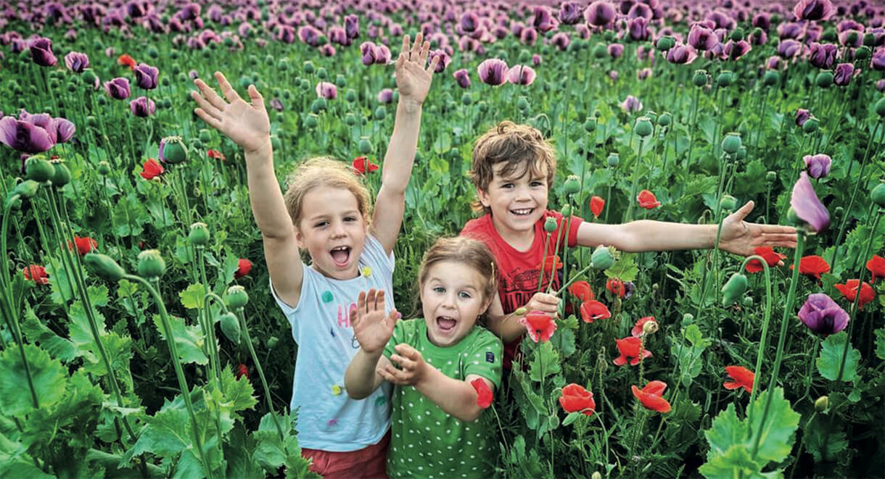

Iniciativa pro vzdělávání v rytmické masáži, z.s.
Thurnova 974/13, Břevnov, 169 00 Praha 6
IČ 6364144
CESTA DÍTĚTE DO VLASTNÍHO TĚLA
a naše medicínsko - pedagogické doprovázení tohoto procesu

Seminář pro lékaře a jiné zdravotníky, terapeuty a pedagogy. *
15. 3. 2024 18:00 - 17. 3. 2024 13.00
Lektoři:
Dr. med. Armin Husemann
Dr. med. Emma Husemann
Mag. Dr. Charlotte Allmer MSc, MEd
Mgr. Barbora Forbaková
Dr. med. Armin Husemann vystudoval hudbu a medicínu. Je autorem četných odborných publikací a celý svůj profesní život se zabývá spojením vědy a umění v nauce o člověku.
Od pátku do neděle budeme společně hledat způsoby, jak být jako lékaři/ky, terapeuti/ky, učitelé/ky nápomocni při cestě dítěte do vlastního těla během vývoje od dětství k dospělosti.
Ve třech pracovních skupinách se budeme hlouběji věnovat oblastem působení lékaře s Dr. med. A. Husemannem nebo působení pedagožky a lékařky s Dr. med. Emmou Husemann. Probereme i působení tělesné terapeutky se zaměřením na rytmickou masáž s Mag.Dr. Charlotte Allmer MSc, MEd.
Program:
Ke stažení naleznete zde.
Komentovaná prohlídka:
Ve čtvrtek před seminářem se můžete zúčastnit komentované prohlídky Prahy se zastavením na místech spojených s pobyty Rudolfa Steinera v Praze. Více informací a možnost přihlášení naleznete zde.
Koncert:
Srdečně Vás zveme na koncert KVINTETO INTERVALLO. Více informací naleznete zde.
Místo konání:
Waldorfská škola Jinonice, pavilon D
Mezi Rolemi 8, Praha 5
Registrace:
Registrace do 28. 2. 2024
Při registraci do 15. 1. zvýhodněná cena.
Možnost slevy pro studující.
Rezervace pouze na přednášky potvrdíme od 1. 3. 2024 (z kapacitních důvodů).
Účastnický poplatek do 15. 1. 2024:
Plný poplatek: 3.000 Kč
Sponzorský poplatek: 4.500 Kč
Studentský poplatek: 1.500 Kč
Poplatek za jednotlivé přednášky:
Běžný poplatek: 400Kč / přednášku
Sponzorský poplatek: 500Kč / přednášku
Studentský poplatek: 200Kč / přednášku
Prosíme o úhradu na účet:
2201332545 / 2010 (CZK)
Text pro příjemce: vaše Jméno Příjmení, Cesta dítěte
Přijetím částky na účet budete závazně registrováni.
* Seminář bude probíhat v němčině s překladem do češtiny.
{kind=link}
{kind=link}